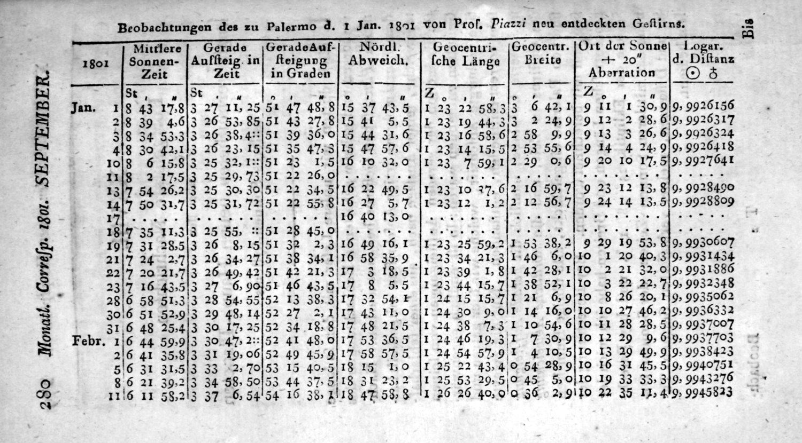
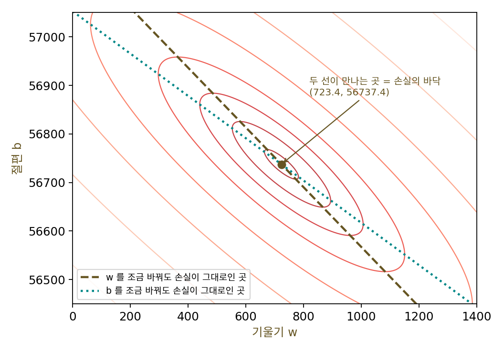
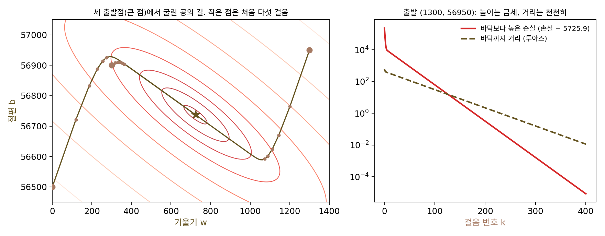
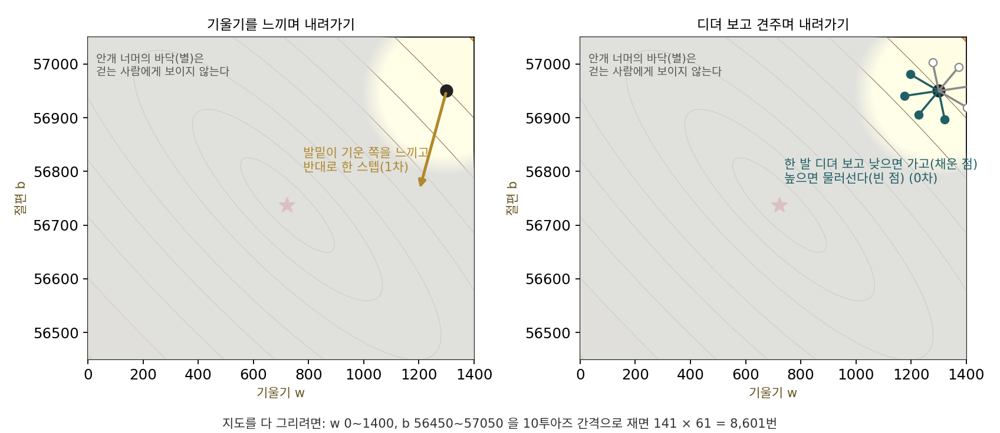
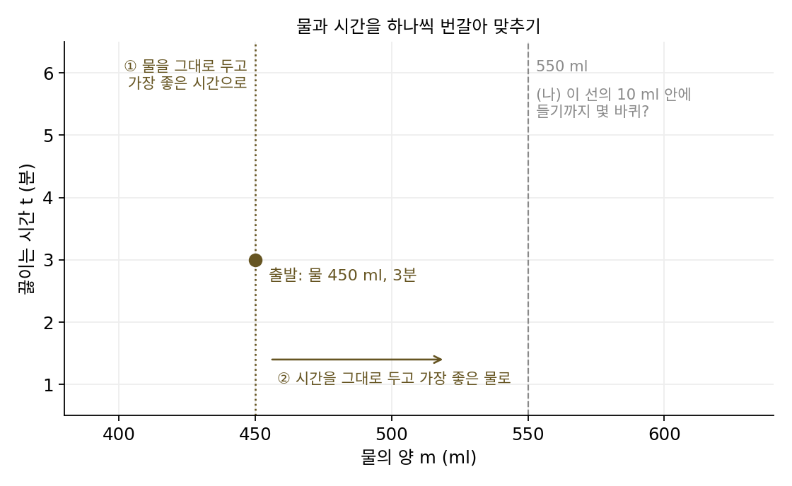
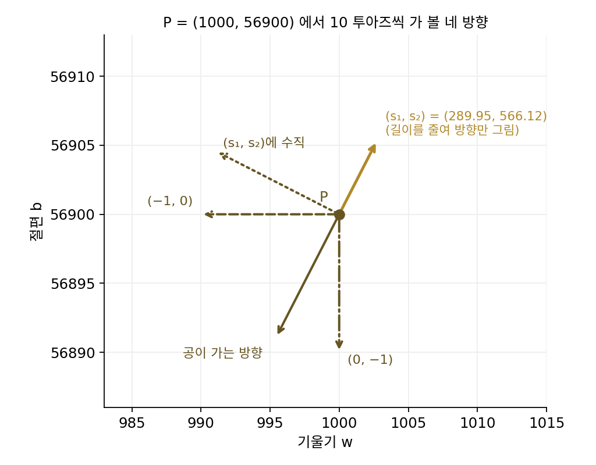
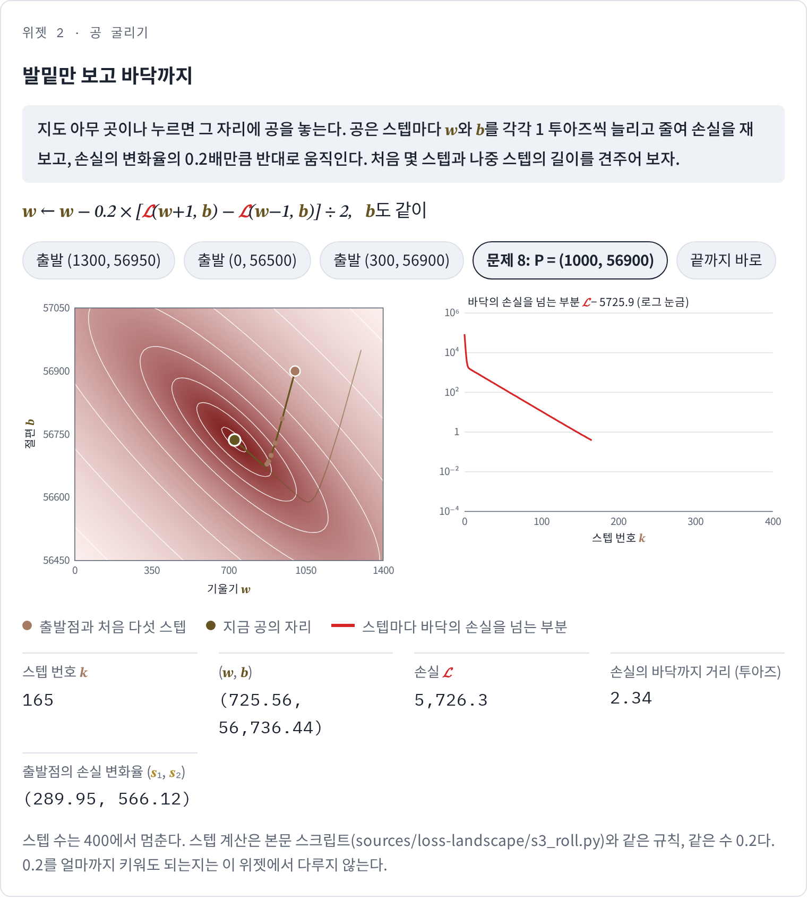
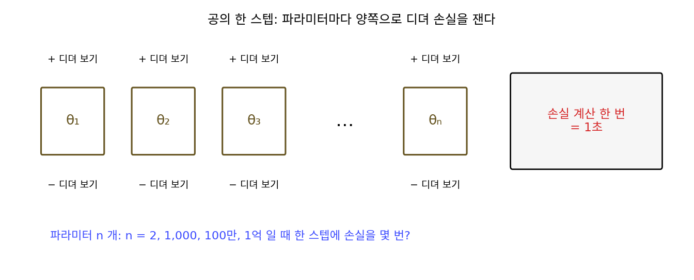

최적화: 발밑만 보고 바닥으로
보스코비치 지형을 다 그려 놓으니 손실이 가장 작은 자리, 지형의 바닥 (723.44, 56737.43)이 눈에 보였다. 그런데 이 지도를 그리는 데 손실을 몇 번 계산했을까? w 0~1,400, b 56,450~57,050을 10투아즈 간격으로 재면 141 × 61 = 8,601번, 1투아즈 간격으로 재면 842,001번이다. 파라미터가 둘이라 이 정도로 끝났다. 한 축을 100칸으로만 나눠도 파라미터가 셋이면 100만 번, 열이면 10²⁰번이다. 파라미터가 수백만 개인 신경망에서는 지도를 그린다는 생각 자체를 버려야 한다. 짙은 안개 속 산에서 발밑밖에 보이지 않는 사람처럼, 지금 선 자리 근처만 보고 가장 낮은 곳을 찾아갈 수 있을까?
역사: 바닥을 식으로 푼 사람들
르장드르의 부록이 나오기 몇 해 전인 1801년 1월 1일, 이탈리아 팔레르모의 천문학자 주세페 피아치(Giuseppe Piazzi)가 움직이는 작은 별을 발견했다. 오늘날 왜행성으로 분류되는 케레스다. 피아치는 몇 주 동안 그 자리를 기록했지만 케레스는 곧 태양 빛에 가려 보이지 않게 되었다. 하늘을 가로지르는 짧은 호 하나만 남은 관측으로 궤도를 구해, 몇 달 뒤 어디에 다시 나타날지 맞혀야 했다. 스물네 살이던 카를 프리드리히 가우스(Carl Friedrich Gauss, 1777–1855)가 궤도를 계산해 예측 위치를 보냈고, 1801년 말에서 이듬해 초 사이에 프란츠 폰 차흐(Franz von Zach)와 하인리히 올버스(Heinrich Olbers)가 그 근처에서 케레스를 다시 찾아냈다. 가우스는 1809년의 책 『천체 운동론(Theoria motus)』에서 빗나감의 제곱합을 가장 작게 하는 원리를 1795년부터 써 왔다고 적었다. 먼저 책으로 낸 르장드르는 이 말을 달가워하지 않았고, 누가 먼저냐는 다툼이 오래 이어졌다.

르장드르와 가우스는 바닥을 찾아 걸어가지 않고 식으로 바로 풀었다. 바닥에서는 어느 쪽으로 아주 조금 움직여도 손실이 늘지도 줄지도 않으므로, w 쪽으로 조금 움직여도 평평하고 b 쪽으로 조금 움직여도 평평하다. 평균 제곱 오차에서 이 두 조건을 적으면 「빗나감의 합이 0」과 「빗나감에 x를 곱한 것의 합이 0」이라는, w와 b에 대한 일차방정식 두 개가 나온다. 보스코비치의 다섯 점이라면 1.34052w + 2.1783b = 124,560.92와 2.1783w + 5b = 285,263이고, 미지수를 하나씩 지워 풀면 (723.44, 56737.43)이 나온다. 이 연립방정식을 지금은 정규방정식이라 부른다. 손실이 제곱의 합이라 지형이 반듯한 그릇이고, 그래서 평평한 곳이 일차방정식으로 적힌 것이다.

신경망의 손실도 바닥에서는 모든 방향으로 평평하다. 그러나 층을 지나며 곱하고 꺾인 함수라서, 「평평하다」는 조건을 적으면 파라미터 수만큼의 복잡한 방정식이 얽혀 나오고 그것을 식으로 풀 길이 없다. 바닥을 식으로 찾는 방법은 지형이 반듯한 그릇일 때만 쓸 수 있다.

미지수 둘짜리 연립방정식이면 중학교에서 푸는 거잖아요. 정규방정식이 그렇게 대단한 거예요?

보스코비치 직선은 미지수가 둘이죠. 케레스의 궤도를 정하려면 숫자가 몇 개 필요할까요?

음, 궤도가 얼마나 찌그러졌는지, 얼마나 기울었는지, 지금 어디쯤 있는지… 둘보다는 훨씬 많겠네요.

궤도는 숫자 여섯 개로 정해져요. 관측이 여럿이면 정규방정식의 칸 하나를 채우는 데도 여러 자리 곱셈을 관측 수만큼 해서 더해야 하고, 미지수 여섯 개를 하나씩 지우는 데도 곱셈과 나눗셈이 줄줄이 이어져요. 그걸 펜과 로그표로 했어요. 중간에 한 번 틀리면 처음부터 다시고요.

지금은 np.linalg.solve 한 줄인데, 그때는 정규방정식을 세운 다음 그 방정식을 손으로 푸는 게 진짜 일이었네요.

그런데 그 일차방정식도 지형이 반듯한 그릇일 때만 나온다고 했잖아요. 식으로 바로 풀 수 없는 지형에서는, 무엇을 보고 바닥을 찾아가야 해요?
공을 굴려 보기
식으로 풀 수 없다면 지형 위에 공을 하나 놓고 굴러가게 하면 된다. 공은 지형 전체를 모른 채, 지금 닿아 있는 자리가 어느 쪽으로 기울었는지만 느끼고 낮은 쪽으로 조금 굴러간다. 이 규칙을 보스코비치 지형에서 숫자로 따라가 보자. 지형 전체를 그려 놓아서 공이 제대로 바닥에 닿는지 확인할 수 있다는 것이 이 장난감의 좋은 점이다.
공을 (1300, 56950)에 놓는다. 손실은 246,827.3으로, 가장 낮은 손실 5,725.9의 마흔세 배쯤 되는 높은 비탈이다. 발밑이 어느 쪽으로 기울었는지 알려면 디뎌 보면 된다. w를 1투아즈 늘린 자리와 1투아즈 줄인 자리의 손실을 재서 그 차이를 2로 나누면, w 쪽으로 1투아즈 갈 때 손실이 얼마나 오르는지가 나온다. 이 값을 손실의 w 방향 변화율 s₁이라 하자. 출발점에서 s₁ = 494.38이고 같은 일을 b 쪽에 하면 s₂ = 927.52인데, 둘 다 양수이니 w와 b를 모두 줄여야 내려간다. 공은 w, b 각각 변화율의 0.2배만큼 반대로 움직인다(0.2는 그림을 위해 고른 작은 수다). 첫 스텝은 w로 −98.88, b로 −185.50이고, 새 자리에서 다시 디뎌 보고 옮기기를 되풀이한다.
| 스텝 번호 k | w | b | 손실 𝓛 | 손실의 바닥까지 거리 |
|---|---|---|---|---|
| 0 | 1300.00 | 56950.00 | 246,827.3 | 614.50 |
| 1 | 1201.12 | 56764.50 | 78,902.6 | 478.45 |
| 2 | 1145.18 | 56670.43 | 33,280.3 | 427.03 |
| 3 | 1111.63 | 56623.73 | 20,597.2 | 404.49 |
| 10 | 1025.04 | 56597.56 | 12,920.5 | 332.46 |
| 50 | 828.34 | 56688.54 | 6,597.7 | 115.73 |
| 100 | 751.49 | 56724.36 | 5,788.3 | 30.95 |
| 200 | 725.45 | 56736.49 | 5,726.2 | 2.21 |
| 300 | 723.58 | 56737.36 | 5,725.9 | 0.16 |
공은 바닥에 닿는다. 231스텝이면 바닥에서 1투아즈 안에 들고, 그동안 손실을 계산한 횟수는 스텝마다 네 번씩 924번이다. 지도 전체를 1투아즈 간격으로 그리는 842,001번보다 900배쯤 적다. 다른 곳에 놓아도 마찬가지여서, (0, 56500), (0, 57000), (1400, 56450), (300, 56900)에서 놓은 공도 모두 232~252스텝 만에 같은 바닥의 1투아즈 안에 든다.
표에서 눈여겨볼 것이 하나 있다. 가장 낮은 손실 5,725.9를 넘는 부분은 처음 세 스텝 만에 90% 넘게 사라지는데, 그때 바닥까지 거리는 614.5에서 404.5로 3분의 1밖에 줄지 않았다. 공은 처음에 골짜기를 가로질러 가파른 벽을 미끄러져 내려와 골짜기 줄기에 닿고, 그다음부터는 비스듬한 골짜기 줄기를 따라 천천히 기어간다. 높이는 금방 낮아지는데 자리는 한참 더 움직여야 한다.
이렇게 손실이 가장 작아지는 파라미터를 찾는 일을 최적화 (손실 지형에서 가장 낮은 곳 찾기 / optimization)라 한다. 정규방정식처럼 식으로 푸는 것도 최적화이고, 공을 굴리는 것도 최적화인데, 공의 규칙을 식으로 적으면 다음과 같다.
변화율 두 개를 묶으면 화살표 (s₁, s₂)가 되고, 공은 그 반대쪽으로 간다. 이 방향이 다른 방향보다 나은지, 등고선과 어떤 각도를 이루는지는 문제 8에서 직접 재 본다. 이 화살표에는 이름이 있고, 디뎌 보지 않고 미분으로 바로 구하는 법도 있다. 곱하는 수 0.2를 얼마까지 키워도 되는지도 따로 따져야 할 물음이지만, 이 장에서는 공이 실제로 바닥에 닿는다는 것까지만 본다.

절 첫머리의 물음, 안개 속에서 발밑만 보는 사람을 그림으로 그리면 공이 한 일이 무엇인지 드러난다. 사람은 지형 전체를 보지 못하고 둘레의 작은 원만 본다. 그 원 안에서 발밑이 기운 쪽을 느낄 수 있으면 반대쪽으로 한 스텝을 내딛고, 기운 쪽을 느낄 수 없으면 몇 군데를 디뎌 보고 낮은 쪽을 고른다.

ML에서: 학습 곡선은 공의 높이 기록
신경망 학습도 손실 지형 위에서 공을 굴리는 일이다. 학습을 시작할 때 파라미터를 무작위로 정하는 것은 공을 지형의 아무 곳에나 놓는 것이고, 학습 코드의 한 바퀴(손실 계산 → 변화율 계산 → 파라미터 고치기)가 공의 한 스텝이다. 화면에 찍히는 손실을 스텝마다 이은 학습 곡선은 공의 높이를 기록한 그래프다.
그래서 보스코비치 지형에서 본 일이 학습 곡선을 읽는 데 그대로 쓰인다. 손실이 처음에 뚝 떨어진 뒤 거의 평평해 보여도, 공은 길쭉한 골짜기 줄기를 따라 여전히 먼 길을 가는 중일 수 있다. (1300, 56950)에서 출발한 공은 서른한 스텝 만에 바닥의 손실 5,725.9를 넘는 부분의 99%를 없앴지만, 그때 바닥까지 거리는 아직 191투아즈였다. 손실 숫자만 보고 「다 배웠다」고 학습을 멈추면 공은 바닥에서 한참 떨어진 자리에 남는다.
문제 7. 라면 물과 시간
라면 맛을 물의 양 m(ml)과 끓이는 시간 t(분)로 맞춘다. 이 책에서 지어낸 맛 손실은 D = ((m − 550)/100)² + (t − 4.5 − (m − 550)/50)² 이다. 물이 많을수록 더 끓여야 맛이 맞는다는 설정이다. 처음 물 450 ml, 3분에서 시작해, 물을 그대로 두고 가장 좋은 시간으로 고치고 다음에는 시간을 그대로 두고 가장 좋은 물로 고치는 식으로 물과 시간을 하나씩 번갈아 맞춘다. (가) 한 바퀴 뒤 물과 시간은? (나) 물이 550 ml 의 10 ml 안에 들기까지 몇 바퀴가 걸리는가? (다) 맛 손실에서 (m − 550)/50 이 빠지면?

물을 정해 두고 가장 좋은 시간, 시간을 정해 두고 가장 좋은 물을 고르는 거니까 한 바퀴면 끝날 것 같아. 둘 다 가장 좋은 값으로 맞췄으면 더 좋아질 데가 없잖아.
계산해 볼게. 물 450에서 가장 좋은 시간은 4.5 + (450 − 550)/50 = 2.5분이야. 시간 2.5분에서 가장 좋은 물은… 470 ml. 한 바퀴에 20 ml밖에 안 움직였어.

550까지 한참 남았네. 시간을 맞춘 뒤에 물을 바꾸니까, 아까 맞춘 시간이 새 물에서는 더 이상 가장 좋은 시간이 아니게 된 거야. 하나씩 맞춘 값은 그 순간에만 가장 좋았던 거고.
두 바퀴, 세 바퀴째는요? 맛 손실이 어떻게 줄어드는지 봐요.

486, 498.8, 509.0 ml… 맛 손실이 1.25, 0.8, 0.512, 0.328로 한 바퀴마다 0.64배씩만 줄어요. 물이 550의 10 ml 안에 드는 데 11바퀴, 맛 손실이 거의 0이 되려면 서른 바퀴쯤 걸려요.
(다)처럼 그 항이 빠지면 물을 맞출 때 시간이 끼어들지 않으니까 한 바퀴에 (550, 4.5)로 끝나. 물과 시간이 서로 엮여 있어서 오래 걸리는 거야.
엮여 있으면 왜 오래 걸릴까요? 등고선으로 그려 보면 지형이 어떤 모양일까요?
물이 많으면 시간도 길어야 하니까… 맛 손실이 작은 골짜기가 비스듬하게 누워 있겠네요.
물과 시간을 하나씩 맞추면 그 지형 위에서 어떻게 움직이죠?

가로로 한 번, 세로로 한 번만요. 그러니까 비스듬한 골짜기 줄기를 계단처럼 지그재그로 따라 내려가요. 보스코비치 지형의 골짜기가 비스듬했던 것과 같은 모양이에요.

공은 두 쪽을 동시에 움직이니까 계단이 아니라 비스듬히 갈 수 있는 거군요. 떠 있는 브리지가 달린 기타를 튜닝할 때랑 같아요. 줄 하나를 감으면 브리지가 기울어서 다른 줄 음이 틀어지니까, 여섯 줄을 몇 바퀴씩 돌면서 맞춰야 하거든요.
문제 8. 등고선을 가로지르는 방향
보스코비치 지형의 점 P = (1000, 56900) 에서 손실은 91,838.0, 손실의 변화율은 (s₁, s₂) = (289.95, 566.12) 다. (가) 길이가 1 인 방향 넷, 공이 가는 방향 −(s₁, s₂)/길이, w 만 줄이는 (−1, 0), b 만 줄이는 (0, −1), 그리고 (s₁, s₂) 에 수직인 방향으로 10 투아즈씩 가면 손실은 각각 얼마나 바뀌는가? (나) 공은 등고선과 어떤 각도로 지나가는가? (풀어 본 뒤 위젯 2 의 「문제 8」 단추로 확인해 보자.)

계산했어요. 10투아즈씩 가면 공이 가는 방향으로 −6,240.37, w만 줄이면 −2,872.66, b만 줄이면 −5,561.20이에요. 수직인 방향은 +6.67이고요. 공이 가는 방향이 제일 많이 줄어요.
수직인 방향으로 1투아즈만 가면요?
+0.07이에요. 10투아즈에서는 6.67인데 1투아즈에서는 0.07이라 거의 0이에요. 거리를 10분의 1로 하니까 변화는 100분의 1이 됐어요.
거리가 10분의 1인데 변화가 100분의 1이면 거리의 제곱에 비례하는 거네. 그럼 그 방향으로는 1차로는 손실이 전혀 안 바뀐다는 뜻이야.
1차 근사에서 길이 1인 방향으로 1만큼 가면, 손실 변화는 무엇으로 정해지죠?
(s₁, s₂)와 그 방향의 내적이요. 수직인 방향에서는 그게 0이고요. 손실이 바뀌지 않는 방향이니까 그게 등고선의 방향이네요.

그래요. 그럼 공이 가는 방향과 등고선의 방향은 서로 어떤 관계일까요?
공은 (s₁, s₂)의 반대쪽으로 가고, 등고선은 (s₁, s₂)에 수직이니까 공은 등고선을 직각으로 가로질러요. 위젯 2에서 공의 길이 등고선을 언제나 수직으로 뚫고 지나가는 게 그래서였어요.
그럼 등산로가 지그재그인 건 일부러 등고선을 따라 걸어서 높이를 천천히 바꾸려는 거네.

응, 스키장 초보 코스에서 옆으로 비스듬히 내려가라고 배운 것도 같은 원리야. 비스듬히 가면 등고선을 천천히 건너고, 공은 그 반대로 등고선을 직각으로 끊으면서 가장 가파르게 내려가는 거고.

문제 9. 파라미터가 1억 개라면
파라미터가 n 개인 모델에서 공을 굴리고, (가)와 (나)는 n = 2, 1,000, 100만, 1억 일 때를 각각 계산한다. (가) 공의 한 스텝에 손실을 몇 번 계산해야 하는가? (나) 지도를 그리려고 한 축을 10 칸으로만 나누면 몇 번인가? (다) 1억 개짜리 모델을 이 공으로 학습시킬 수 있을까?

(가)는 파라미터마다 양쪽으로 디뎌 보니까 2n번이요. n = 2면 4번, 1,000이면 2,000번, 100만이면 200만 번, 1억이면 2억 번이에요. (나)는 10n번이니까 n = 1,000만 돼도 10의 1,000제곱이고요. 공이 압도적으로 싸네요. 이걸로 되겠는데요.
한 번 손실을 계산하는 데 1초가 걸리는 모델이라고 해 봐요. 1억 개짜리에서 공이 한 스텝 가는 데 얼마나 걸리죠?
2억 초요… 6년이 넘어요. 한 스텝에요. 보스코비치 지형에서도 바닥까지 231스텝이었는데요.
지도에 비하면 엄청 싸졌지만, 디뎌 보기로는 스텝 하나가 파라미터 수에 비례해서 비싸져. 파라미터마다 따로 한 번씩 손실을 계산해야 하니까.
그런데 실제로는 1억 개짜리 모델도 학습시키죠. 손실을 계산할 때 이미 지나간 길이 있는데, 그 계산을 버리지 않고 쓸 수는 없을까요?
손실을 한 번 계산하면… 파라미터 하나하나가 그 손실에 어떻게 기여했는지가 계산 과정에 다 들어 있지 않을까요?
들어 있다면, 디뎌 보기는 그 계산을 어떻게 하고 있죠?

버리고 매번 처음부터 다시 계산하고 있네요. 그 과정을 거꾸로 되짚어 변화율 1억 개를 한꺼번에 얻는 길이 있다면 스텝 하나가 손실 계산 몇 번 값으로 줄어들겠어요. 미분의 연쇄법칙이 바로 그런 되짚기일 것 같아요.
게임에서 어느 장비가 딜을 넣었는지 알려고 장비를 하나씩 빼고 보스전을 다시 도는 게 디뎌 보기고, 한 판 끝난 뒤 전투 기록을 거꾸로 읽어서 장비마다 넣은 딜을 한 번에 나눠 보는 게 되짚기네요. 장비가 1억 개면 앞의 방법으로는 판을 2억 번 돌아야 하고요.